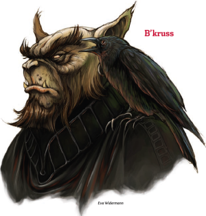

Week 37 - Watch me light this one!
The party decide to go investigate the scarlet spire and boneyard, and then the building that the ebon triad used to operate out of. But on their way, they are met by a group of smiling hobgoblins. It seems their fame has preceeded them.
 The leader is a Hobgoblin named B’kruss, who proceeds to deliver a series of thinly-veild insults regarding the party's suitability as guests for the prince's banquet. These threats culminate in a challenge: to wrestle his mount “Gristlegape”, a dire boar. Of course, the boar must not be harmed.
We kind of concluded at the table that the contest would be held ancient olymic style. Naked. It’s a Goliath thing, apparently.
Gauthakan accepts. Gristlegape slips from his grasp at first, but he pins the boar in a difficult-to-beat 18 seconds. Then it's B’kruss' turn. He takes a moment to succeed, but matches Gauthakan's time.
The match is a tie. What to do? Gauthakan challenges B’kruss to a goliath challenge: climbing. B’kruss himself does not accept, but nominates one of his leiutenants. They head to the cliffs around the promontary where the Great Project is being built. Although the lieutenant makes a good accounting of himself, he is no match for the native skill of the goliath.
B’kruss and his minions depart, with much muttering and dark looks.
So! Where were we? Oh yes - the scarlet spire. The party investivate the red spire, home of the Watchful Rest. Although there is a chapel in there and a collection box, the real money here, it seems, comes from the fact that the watchful rest run a well-patronised beauty salon. The party determine that Lady Lashonna will indeed be getting her treatment here prior to the banquet, but it will be very, very private. So they book themselves in and decide to investigate the graveyard.
The graveyard is open to all, and Frith scans it thoroughly for undead activity, but there seems to be none that he can detect at this time. There is a crematorium attached to the graveyard, but they do not investigate it, supposing that if the dead are being cremated, then they are not being reanimated as undead horrors.
Next on the agenda is the old address of the Ebon Triad. This turns out to be a hospital, or more realisticaly hospice, run by a crazy old lady named Furtopia. Flash charms his way in, and Frith begins looking over the sick. They are ill of the usual illnesses of the urban poor - dysentry, cholera, tuberculosis and so on. No Kyuss worms in evidence. Suspecting poison or nefarious activity by Furtopia, he uses Cure Poison, which has no effect. Cure Disease, however, works perfectly and he decides to return here daily until all are cured. For good measure, he casts Heal on Furtopia herself. This takes the edge of her incipient madness and senility, but she is still a little weird and knows no more about anything much than before.
The party call Frith to join them, and proceed to do what they do. Frith arrives, but by the time he does, Gauthkan has pounded the rope into - not sure what. But it’s pounded. The party go to the next room, which is a somewhat larger chamber with a well set in it.
Dammit, that rope golem should totally have had DR/slashing.
They search the room, and Jericho discovers (just making 30 on the search check) that a wall is hollow. Gauthkan deals with the wall and behind it is a reasure trove - money, items, and a book which once the Disguise Page spell is dealt with contains the names and adresses of all the Ebon Triad members. Quite a few are crossed out - Thedrick, Grallak Kur and The Faceless One of Diamond Lake, Loris Raknian and Bozal Zahol of Sharn - familar names indeed. Loris Raknian has a question mark. And one name and address is of particular interest.
“Illthane - Alhaster”.
The party return to the surface, considerably more wealthy and with the means to finally crush not only the Ebon Triad as an organisation, but having destroyed the very focus of their faith.
They return to their accommodations and its bar. Flash listens for rumours. He hears two things of interest:
- “Lady Lashonna’s lived in Alhaster for decades, since before our beloved prince gained control. She’s the only one he seems to defer to. Some people think they’re lovers. Personally, I think the prince is a wonderful man who is simply being polite to one of his most famous subjects."
- “A couple of my stupid friends heard that the dragon what lives under the Traitors’ Graves got killed. They went out there to loot her lair, and I haven’t heard from them since. Did I mention they were stupid?” I swear they rolled this one legit.
Illthane? Dragon? Traitor’s graves? Well! I think we all know where we are heading next week!